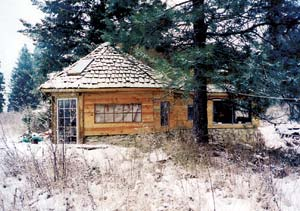
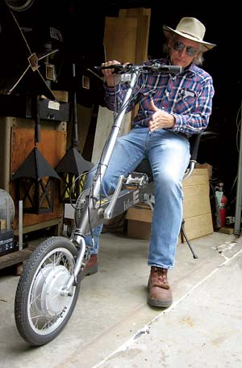

Dear Mother
August/September 2006
Issue #217 August/September 2006
Living Green in the City
Small-scale Homesteading
A Garage Full of EVs
EVs: Reality vs. Promise
EV Fan Starting Early
Bare-handed Homebuilding
Support Humane Farming
Democracy and Money
Little Tractors, Big Horses
Geo-logical
Supersize Sweet Potato
If You Build it, it Will Grow
Remove Nuclear Subsidies
Better Than Coal
Nuclear Energy and Global Warming
I’m a Country Boy
Living Green in the City
I especially appreciated Linda Hochstetler’s “Living Lightly in the City” (June/July 2006). I’m a city boy, but I’m able to use a lot of what I read in Mother Earth News. I’m gradually turning my back yard into a vegetable garden, for example, and I hope to fill the front yard with herbs under the pecan and pear trees. Not only do I not plan to move to a rural area, I agree with Ms. Hochstetler that parts of cities actually offer more opportunities to live lightly. I can walk to my favorite grocery store, a bus stop is a block away, a library is next door, and a park, where I walk daily, is a half-mile away. Ms. Hochstetler is not the only one who believes city living is the better choice, given the existence of public transportation and the proximity of things that just aren’t available in rural areas without driving.
Thanks for recognizing it’s not only possible to be frugal in the city, it just may be easier.
Larry Roth
Kansas City, Missouri
Small-scale Homesteading
I never thought Mother Earth News was for us. After all, we live on a quarter-acre in an historic downtown area on Long Island. But a thoughtful relative just gave us a gift subscription, and we read our first issue cover to cover! Though we’re far from our dreams of raising our kids on a rural farm, we thought we’d let you know what we’re doing with our little piece of Earth.
My husband and children tend a small but bountiful organic garden, allowing us lots of fresh veggies, berries and herbs. This winter we installed a new wood-burning stove that had the highest efficiency and lowest emissions on the market. This spring, we joined a Community Supported Agriculture program with one of our local organic farms to supplement our harvest. And we installed a 9.1-kilowatt solar panel system. Our local utility company gave us a rebate for nearly half the cost, and we’re enjoying watching the meter spin backwards! It’s not 40 acres, or even one, but we’re doing our best to create a cleaner, healthier Earth. Thanks for inspiring us!
Laurie Nigro
Riverhead, New York
A Garage Full of EVs
Thank you for your excellent coverage of electric vehicles (“Drive an EV and Never Buy Gas Again,” April/May 2006). I have a 1981 VW Rabbit that was converted to electric power when new by SCT Industries. It was previously owned by the city of Portland, Ore., which had a fleet of more than 70 of them. Mine had been stripped of all the electrical components before I got it last year. I now have accumulated nearly all the parts to put it back on the road.
Two months ago, I purchased an operating 1980 Ford Courier (Mazda B2000) EV pickup. It is an original conversion by Jet Industries in Austin, Texas. Although 26 years old, it has less than 8,000 miles on it, so it is in quite usable condition. I’ve driven it about 15 miles a day since I got it. It’s ’70s technology, but it works great.
I also have a nearly completed electric-assist recumbent bicycle (shown at right). It’s a Bike-E recumbent with a 36-volt hub motor in the front wheel. The batteries will hang under the rectangular main frame.
I guess my message is, we don’t have to wait for that miracle battery discovery that’s been just around the corner for 50 years. All-electric transportation alternatives that work fine are available now to anyone.
Clyde Schwanke
Topeka, Kansas
EVs: Reality vs. Promise
The promise of EVs is great, and in the ideal situation they would be very appealing. Unfortunately, harsh reality has rendered the currently available low-speed EVs a moot point for the general public. For many (if not most) drivers, low-speed vehicles are simply not workable. For example, it would be nice for me to use an EV for my 20-mile commute, but many of the streets I traverse have a 45-mph minimum speed limit. It’s just not legal, let alone safe, to drive a low-speed vehicle in those conditions. I’d be better off bicycling. I love the concept of EVs and would own one if a viable option were available, but the reality just isn’t living up to the ideal.
Ray Geroski
Louisville, Kentucky
EV Fan Starting Early
I agree 100 percent that electric cars are better than gas-powered cars. Electric vehicles (EVs) are more environmentally friendly and will someday be less expensive to own and operate. You can use solar energy, which is free, to charge them. Of course there are currently some downsides to EVs, like the need for recharging and the limited number of places that can charge them, but I think most of that will change.
Thank you for publishing this article and teaching me and many other readers about EVs and how they benefit our environment.
Will R.
7th Grade
Downers Grove, Illinois
Bare-handed Homebuilding
I was pleasantly surprised by the cover story about the under-$4,000 cabin (“Build this Cozy Cabin,” June/July 2006). I’ve just completed my own creation, which I began with no real source of capital. With optimism, patience, perseverance and the much-appreciated volunteer support of friends, I found material resources and contained my total cash expenditure to about $1,250. My biggest outlay was patience; my greatest asset, a deep desire for true simplicity, nature’s ways and beauty.
I began the structure in 1994 and started living in its bare bones three years later. The project was 11 years in the completion, a bold undertaking for a 54-year-old woman.
My little home was built with no power tools, and all materials were brought in pedestrian-style. I designed it and was involved in every aspect of construction - handling tools during heavy work, measuring and cutting boards, and project management. I dug the trench for the foundation by hand, mixed the cement and laid the dolomite rock foundation myself. This took most of three seasons to complete. I found I really enjoyed the rock work.
Thanks to you, Mother Earth News, my passion has been rekindled. I am making a continued effort, through my writing, to encourage thoughtful, creative, experimental and resourceful housing.
Gail Shooting Star
Naches, Washington
Support Humane Farming
Treating animals as humanely as possible is part of good farming, and Mother Earth News is far-out indeed for acknowledging this in “Our Far-out Free-range Eggs” (April/May 2006). Pasture-raised egg-laying hens and ducks like those at Far Out Farms live happier lives than their caged counterparts on factory farms.
Most of the eggs in the United States are produced on industrial farms that confine millions of hens in barren battery cages so small the birds can’t even spread their wings. Far Out Farms is a happy exception in an industry that has become dominated by factory farming facilities that routinely sacrifice animal welfare for economic gain.
Consumers who continue to buy eggs would be wise to support producers such as Far Out Farms.
Katie Carrus
Coordinator, Factory Farming Campaign
The Humane Society of the United States
Washington, DC
Democracy and Money
In the June/July 2006 issue, I read with interest two related articles, “Declare Energy Independence” and “Who Killed the Electric Car?” It’s been stated that the United States has the best democracy money can buy. That, in my opinion, is the reason the “insanity” goes on. U.S. car companies really didn’t want to produce electric cars. General Motors produced a really good one more by accident than by intent. The head office wasn’t watching what the engineers were doing.
The producers of fossil fuels have a vested interest in keeping things as they are. Like drug cartels, they want us to be addicted to their products. They carefully price their products high enough to reap tremendous profits, but not so high that the majority will demand change. A small amount of their profits is used to buy politicians in order to ensure that legislation is passed to keep the status quo.
Unfortunately, Big Oil, King Coal and the like have more money to spend than the people promoting sustainability. As long as the pockets of Uncle Sam are stuffed, he is not likely to declare energy independence.
Alex Nemeth
Bradford, Pennsylvania
Little Tractors, Big Horses
Regarding “Discover Versatile Compact Tractors,” in the April/May 2006 issue: Really - how economical is it to spend $20,000 to $40,000 on a tractor for a small homestead? Supposing you take home $20/hour from your job, or from growing a particularly lucrative organic crop, it will take six to 12 months of full-time work to pay for this “convenience,” not counting interest expenses if you buy on credit.
Why not consider equine-based technology? All sorts of accessories, such as mowers, cultivators, hydraulic plows and even diesel add-ons are available. Best of all, horses and donkeys reproduce, and mules can live as long as the working life of their owners. Their manure increases the soil productivity. Of course, owning an animal is a regular responsibility, but then so is working six to 12 months to pay for a machine.
Barbara Brooks
Pine Mountain Club, California
Geo-logical
I rise to the Geo Metro’s defense after Ron Cogan’s blanket assertion of the hybrid car’s superiority (“Dear Mother,” April/May 2006). That the Geo wasn’t popular with American buyers is irrelevant, and its power is adequate to its purpose - transporting one to four people at a time.
My Geo has 205,000 miles, with only the water pump and a couple of wheel bearings replaced outside of routine maintenance. Even the alternator is original. Not bad for a car that sees regular use on township gravel roads that can be alternately muddy or snowbound. Its gas mileage has always been superb. No doubt, the hybrids have all the refinements unavailable 13 years ago when my Metro was built, and greater power to boot. They’re also vastly more expensive to buy, only marginally more fuel economical and will almost certainly cost much more to maintain in the long run. No dice!
Ross Nelson
Casselton, North Dakota
Supersize Sweet Potato
We take great pride in our garden. Last year we had a great crop of sweet potatoes. The largest one was 17 pounds, 4 ounces. We put them in gunny sacks and store them in the basement. We ate the last one from last year’s crop in April. Enjoy the picture - we enjoy your magazine.
Tip: Like many country people, we live on a gravel road, and it gets very dusty. We’ve found that morning glories planted on our fencerow catch a lot of the dust.
Melanie and Warren Bintz
Dayton, Iowa
If You Build it, it Will Grow
I really liked your article about the one-room cabin (“Build this Cozy Cabin,” June/July 2006). I think that idea could easily be expanded. How about using structural insulated panels to build it? The author was using the cabin as a place to live while he built a larger house, but it would not take much effort to design the overall building so that the first one-room cabin was but one small part of something that could grow bigger. One unit could be one bedroom; the next unit, another bedroom; a third unit, the kitchen - with all three connected to make the living room and entry.
Eugene MacCaslin
Concord, California
Remove Nuclear Subsidies
Many thanks to Mark Hertsgaard for pointing out all the reasons why nuclear power is exactly the wrong fix for our energy and global warming problems (“The True Costs of Nuclear Power,” April/May 2006). I especially appreciate his pointing out the fact that the only reason we continue to have a nuclear power industry at all is because of the $150 billion in federal subsidies (read: our taxpayer dollars) that have been poured into it for more than 60 years. I’d prefer my tax dollars to be invested in clean, safe, renewable energy like wind and solar.
Patricia Raynor
Reston, Virginia
Better Than Coal
Mark Hertsgaard ignores the societal and personal costs of downstream pollution. Lifelong lung diseases, asthma and heart disease from burning coal create massive costs to society, and the total loss to society, families and friends of those who die from pollution-related heart disease alone is immense (currently estimated by the World Health Organization to be 1 million worldwide per year). The long-term costs of taking care of poorly educated and sick Medicaid patients is massive. Add to this the long-term costs to students whose education is reduced by days missed from school. When you consider this information, nuclear energy looks a lot better than coal.
Steve Dolan
Floral Park, New York
Nuclear Energy and Global Warming
“The True Costs of Nuclear Power” was right on, but did not mention the greenhouse gas contributions of nuclear power. According to a 1968 study by two ex-General Electric nuclear scientists, the fossil fuel inputs to the nuclear power cycle very nearly equal the energy derived, when you consider mining, refining, transport, building of the heavily shielded plant, waste disposal and other factors, including the capacity factor and relatively short life of the plant before it becomes too radioactive and brittle to use. I assume some of these factors have improved since 1968, but I’m wondering if anyone has updated data that could indicate the true greenhouse contribution of nuclear power. It must still be quite substantial.
Ed Haffmans
Lake Worth, Florida
I’m a Country Boy
My husband’s father gave us a subscription to Mother Earth News several years ago. We have found it to be a wonderful gift to pass on to others. It gives new meaning to “pass it along.”
I would also like to share this picture of my grandson Zachary, taken last Fourth of July by his dad. I thought it was a perfect picture to share with Mother Earth News - the joys of a childhood summer.
Patricia J. Smith
Midway, Georgia
Letters to the Editor
- Send an e-mail to letters@MotherEarthNews.com
- Or write to “Dear Mother” at Mother Earth News; 1503 SW 42nd St; Topeka, KS 66609
- Please include your full name, address and phone number. Letters may be edited for clarity and space.
Subscriptions and Customer Care
- For 24/7 service to subscribe, change your address, renew your subscription or give a gift subscription, visit our Web site, http://www.MotherEarthNews.com/customercare.
- You can also send an e-mail to customerservice@ogdenpubs.com
|
 GAIL SHOOTING STAR Gail Shooting Star’s handbuilt home in Naches, Washington. |
 MELANIE & WARREN BINTZ Melanie and Warren Bintz grew a 17 pound, 4 ounce sweet potato in Dayton, Iowa. |
 CHARLES HIGGINSON Clyde Schwanke loves his electric rides. |
|
PATRICIA J. SMITH The joys of a childhood summer. |
|
|